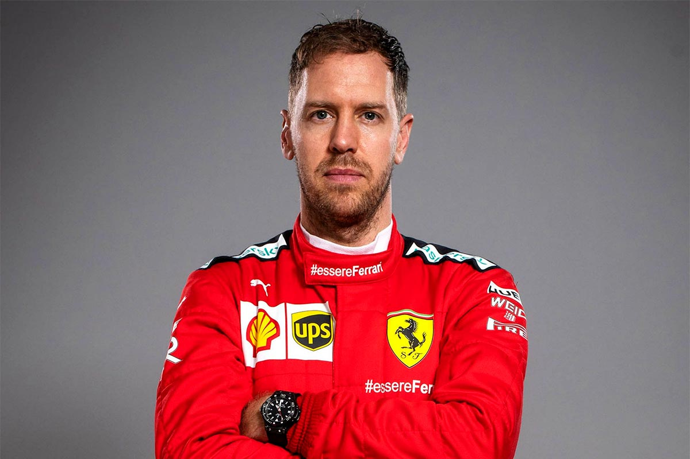
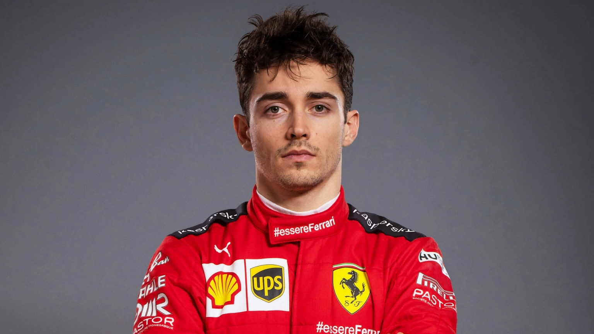

Scuderia Ferrari S.p.A. (Italian: [skudeˈriːa ferˈraːri]) is the racing division of luxury Italian auto manufacturer Ferrari and the racing
team that competes in Formula One racing. The team is also nicknamed "The Prancing Horse", with reference to their logo. It is the oldest
surviving and most successful Formula One team, having competed in every world championship since the 1950 Formula One season.[7]

Sebastian Vettel
Sebastian Vettel (Heppenheim, Hesse, Alemania; 3 de julio de 1987) es un piloto alemán de automovilismo de velocidad. Llegó formando parte del Equipo Júnior de Red Bull
desde los 11 años. Ha ganado cuatro títulos mundiales de Fórmula 1 con el equipo Red Bull en 2010, 2011, 2012 y 2013, más tres subcampeonatos en 2009, 2017 y 2018 estos dos últimos con el equipo
Ferrari. Debutó en 2007 con el equipo BMW Sauber y participó en 2008 con el equipo Toro Rosso logrando su primera victoria en el Gran Premio de Italia de 2008.Se convirtió el 27 de octubre de 2013
en el piloto más joven de la historia en ser tetracampeón de la «máxima categoría» del automovilismo. Actualmente, lleva 53 victorias, 120 podios y 57 pole position. Es el tercer piloto con más Grandes Premios ganados en la historia.
Iguala a Alain Prost en número de títulos mundiales, siendo superado por Lewis Hamilton (6), Juan Manuel Fangio (5) y Michael Schumacher (7).

Charles Lecrec
Nacido en Mónaco, Leclerc comenzó su carrera de karting en 2005, ganando el Campeonato PACA de Francia en 2005, 2006 y 2008.4 En 2009 se convirtió en campeón de cadetes del campeonato francés antes de ascender a la KF3 en 2010,
donde ganó la Copa Kart Junior de Mónaco.5 Continuó en la clase KF3 para el 2011, ganando esta categoría del Campeonato Mundial de Karting, entre otros títulos.1 Durante este año, Leclerc se convirtió en miembro de la compañía ARM.6
Leclerc ganó en la categoría KF2 en 2012 con el equipo de ART Grand Prix, ganador del título WSK Euro Series, así como segundo en el Campeonato Europeo KF2 de CIK-FIA y en el Campeonato Mundial de Karting Sub18 de CIK-FIA.7En su último año de karting
en 2013, Leclerc obtuvo la sexta posición en el Campeonato de Europa KZ de CIK-FIA y terminó segundo en el Campeonato Mundial KZ de CIK-FIA, detrás del actual piloto del Red Bull Racing, Max Verstappen.